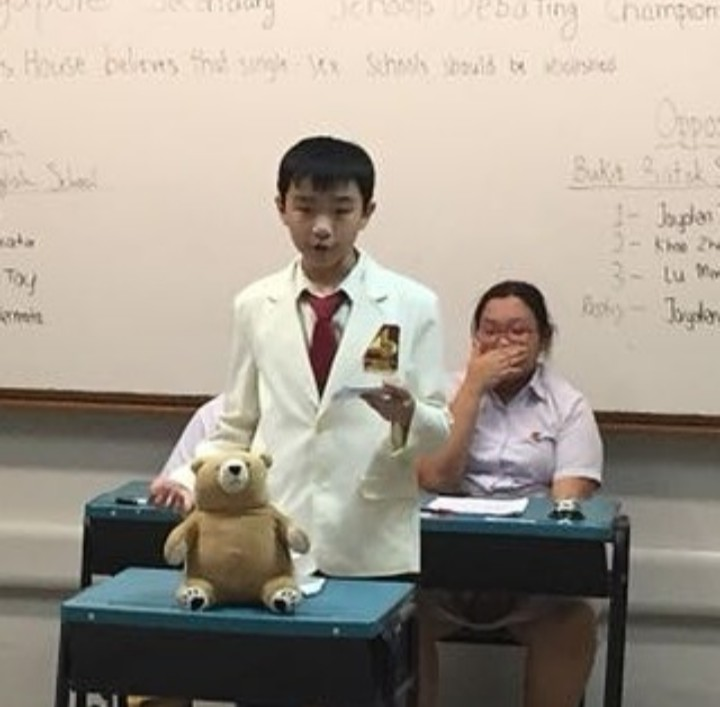
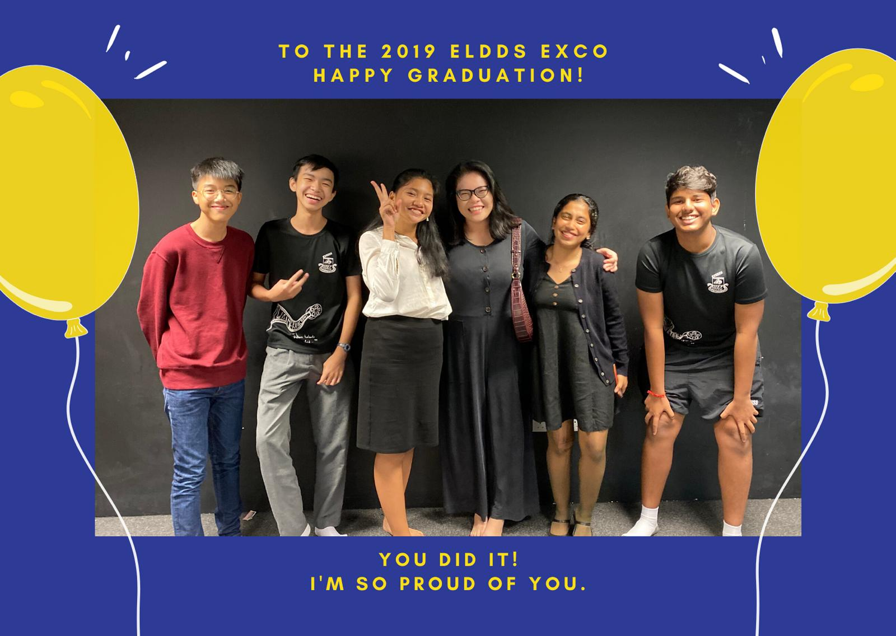
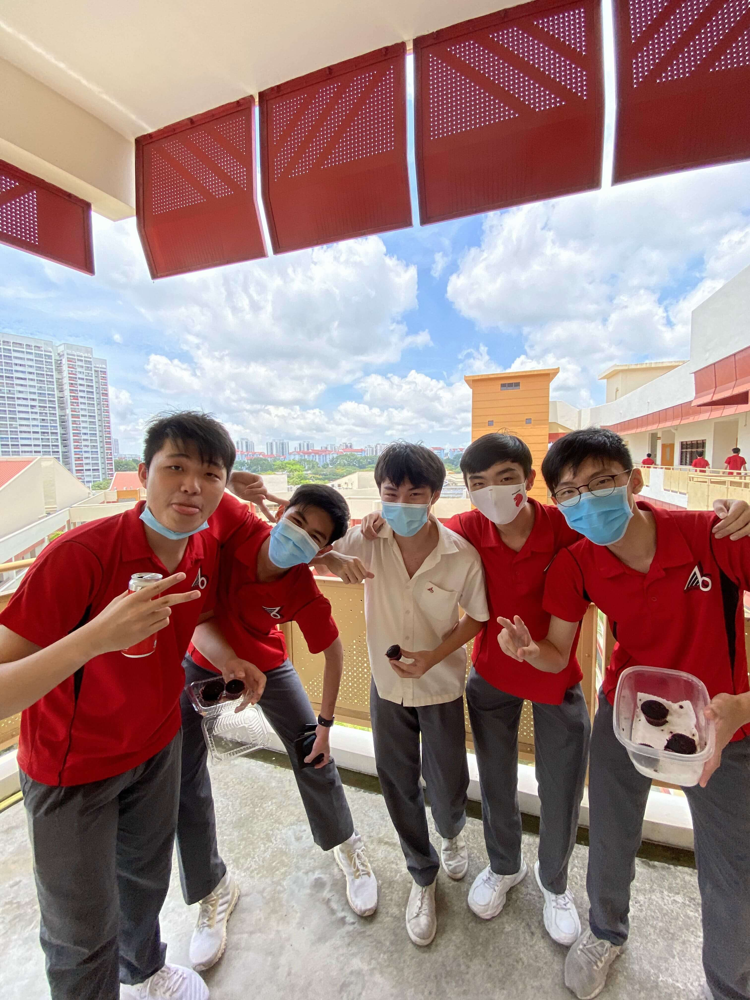

Unlike most people in the CCA, I participated in both wings of the CCA, drama and debate, I started out with debate in sec1-2, and it was a very interesting experience. It had way less members than drama so I was able to make close friends there. Debate was all about research and speaking. I participated in a few competitions and they were all very eventful experiences for me.
The amount of homework required for researching in debate was starting to get too much for me so I decided to join the drama wing fully in sec 3.On the drama side, I learned to act and insert exco photo, play photo more importantly, lead as I was vice-president of the CCA in sec 3-4. I learned to collaborate with my great exco friends on big plays and had a lot of fun along the way.
The o-levels examination at the end of secondary 4 was quite the journey. Surprisingly, some of my fondest memories of secondary school come from the quiet final lessons we had before our exams. Where our teachers were truly trying to help us as much as they could, and me and my friends who I had been with for years were all working towards the same goal of succeeding at the exams. There was a great sense of comradery as these people were the same people I laughed with, played games with and now stress with.
After graduation, to prepare for the exams, I knew I had to cut down on my computer time, I did this by setting up a timetable for graduation photo myself on a mobile app. It took a while to set up but it was well worth it because all it took to see what I was supposed to do was a quick check on my phone. Below is my timetable
| Monday | Tuesday | Wednesday | Thursday | Friday | Saturday | Sunday | |
|---|---|---|---|---|---|---|---|
| 1.30 | Rest after school | Chemistry TYS | |||||
| 3.00 | A-Math TYS | Physics TYS | E-Math TYS | Chemistry TYS | A-Math TYS | Break time | |
| 4.30 | Break time | Physics TYS | |||||
| 6.00 | Chemistry TYS | Physics TYS | Break time | Rest for night | |||
| 7.30 | Rest for night | A-Math TYS | |||||